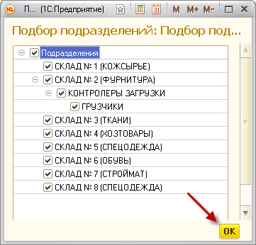

Примечание: галочка напротив строки «Должности и профессии» выделяет все нижеуказанные должности.
2. Заполнить по подразделениям
При выборе данной опции откроется окно подбора, в котором нужно проставить галочки напротив тех подразделений, по которым необходимо оформить приказ. Затем нажмите «ОК».

Примечание: подразделения будут отображаться в режиме просмотра «Дерево». Соответственно, чтобы увидеть дочерние подразделения, нужно нажать на кнопку 
3. Заполнить полностью
При выборе данной опции табличная часть заполниться всеми введенными ранее нормами (по всем подразделениям и должностям).
После заполнения табличной части нажмите кнопку «Провести и закрыть».
Примечание: заполненная таблица не будет содержать те нормы, по которым уже были сформированы приказы.,
Примечание: в ПК АСТБ 2.0 не предусмотрено введение одинаковых норм для одного и того же подразделения и должности, но под разными условиями (например, «Всегда» и «Зимой дополнительно»). Следовательно, если подобные нормы были созданы, приказ на них сформирован не будет.
Командная панель формы «Приказ по нормам выдачи СИЗ» содержит следующие вспомогательные кнопки:
 – Создать новый элемент копированием предыдущего;
– Создать новый элемент копированием предыдущего;
 – Удалить текущий элемент;
– Удалить текущий элемент;
 – Переместить текущий элемент вверх;
– Переместить текущий элемент вверх;
 – Переместить текущий элемент вниз.
– Переместить текущий элемент вниз.